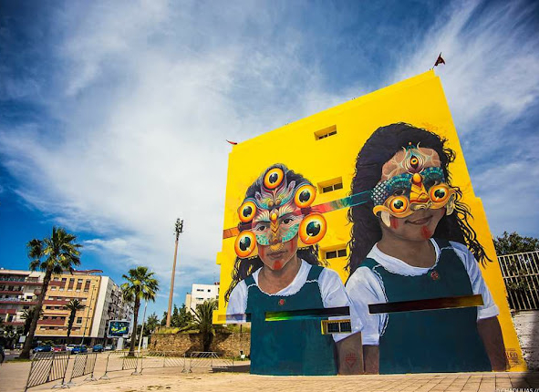
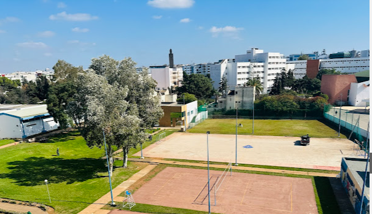
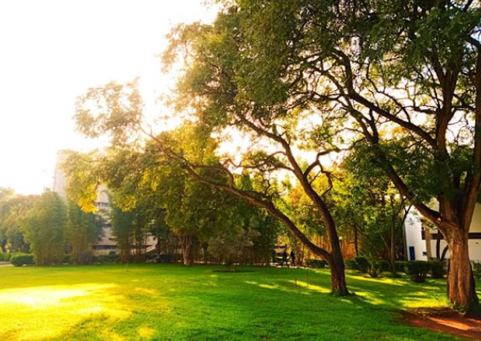

Venue
Find out where ICPS 2026 is taking place.
Venue & Accommodation: Rabat School of Mines (ENSMR)
ICPS 2026 will be hosted at the École Nationale Supérieure des Mines de Rabat (ENSMR) — the Rabat School of Mines — one of Morocco's leading engineering institutions, renowned for academic excellence in applied sciences and engineering since 1972.
Set within a green, self-contained campus in the heart of Rabat, ENSMR offers modern auditoriums, dedicated research facilities, and welcoming shared spaces — the ideal setting for a week of scientific exchange and collaboration. As both the conference venue and the accommodation site, ENSMR allows participants to live, learn, and connect within the same vibrant campus throughout the event.



How to Get Here
The Rabat School of Mines (ENSMR) is conveniently located in central Rabat. Whether you are coming by train, bus, or car, you'll find easy routes connecting directly from the city centre and the airport. Check the link below for detailed directions:
Getting to Rabat: The Essentials
A quick overview to help you plan your trip. Full practical details will be shared closer to the event in a dedicated travel brochure.
✈️ Transport
From Mohammed V International Airport (Casablanca): the easiest option is the ONCF train to Rabat (change at Casa-Voyageurs), or a direct grand taxi/ride-hailing trip. Check current schedules and fares at oncf-voyages.ma before you travel.
By train within Morocco: Rabat is served by two main stations, Rabat-Ville and Rabat-Agdal. Rabat-Agdal is in the same district as ENSMR, and may be the more convenient stop if you're arriving from Casablanca, Tangier, Fes, or Marrakech.
Within Rabat: ride-hailing apps and petit taxis are the most convenient way to reach the campus from either station or the airport.
📱 Mobile Phone Plan
eSIMs work well in Morocco and are usually the easiest option — just check beforehand that your provider includes Morocco, since it isn't part of standard EU roaming.
If you'd rather use a local SIM, Morocco's three main operators — Maroc Telecom, Orange, and inwi — offer cheap prepaid plans, available at the airport and in town (just bring your passport to register).
📲 Apps Not to Be Missed
Careem, Bolt, or inDrive — for getting around (note: Uber is not available in Morocco).
ONCF Voyages — for train tickets and schedules.